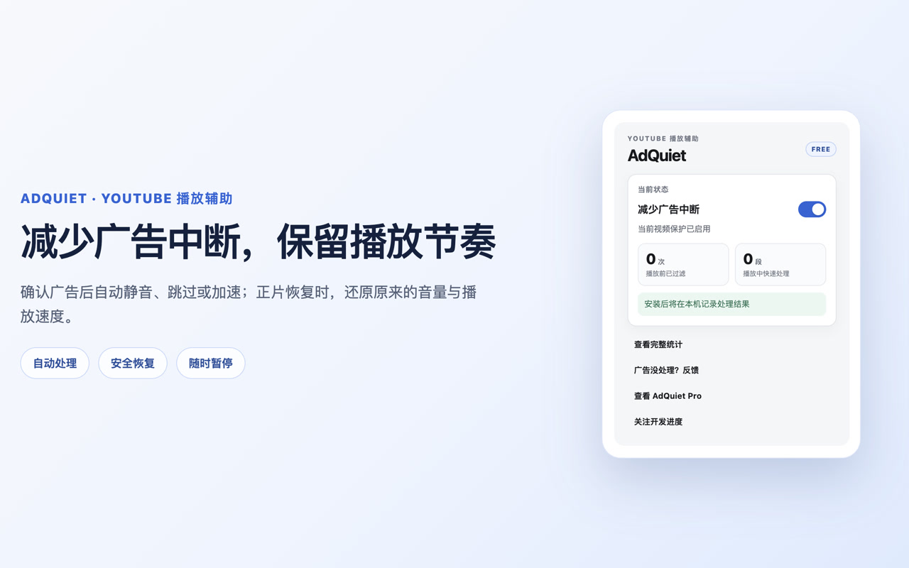
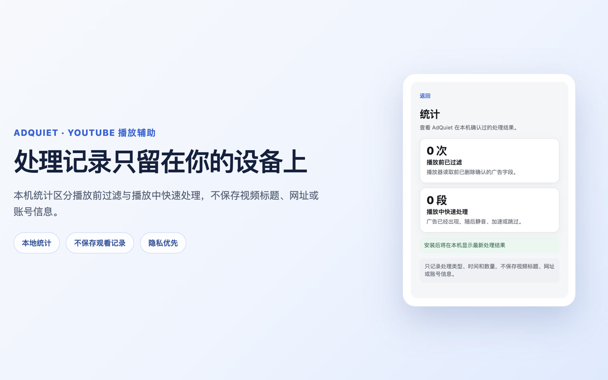
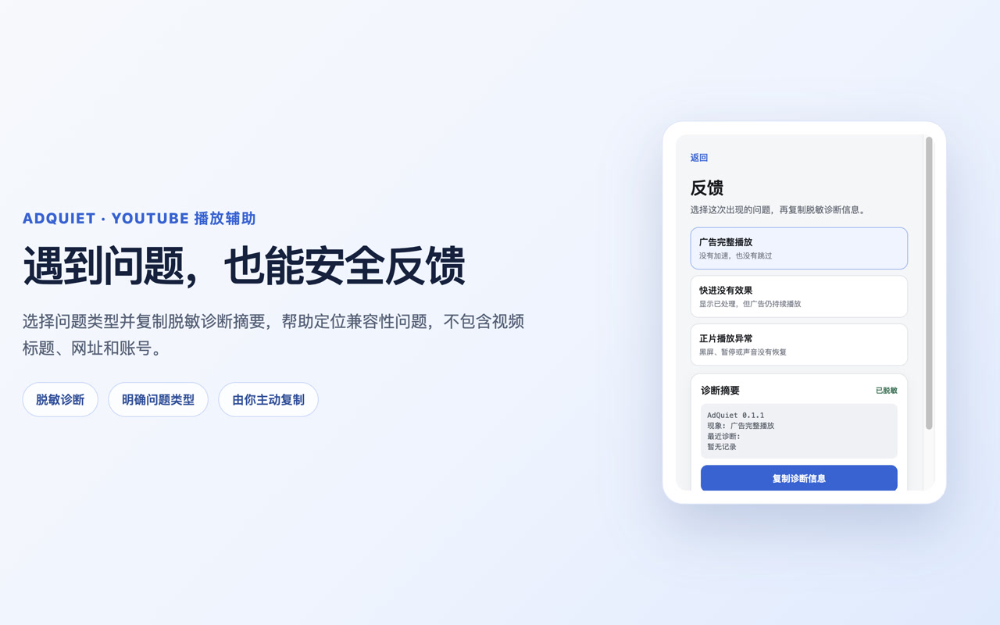

Filter before playback
Known top-level player ad fields are removed while streaming, captions, video details, and normal playback data remain untouched.
AdQuiet reduces YouTube ad interruptions. It filters confirmed player ads first, quietly handles ads that slip through, then restores your playback settings.
AdQuiet uses narrow, known signals. If it cannot confidently identify an ad, it leaves playback alone.
Known top-level player ad fields are removed while streaming, captions, video details, and normal playback data remain untouched.
If an ad reaches the player, AdQuiet tries the native skip action or quietly mutes, shields, and accelerates it.
When content returns, AdQuiet restores your previous muted state, volume, and playback speed.
The popup keeps protection status, aggregate statistics, and privacy-safe feedback tools close at hand.



AdQuiet currently supports standard YouTube desktop watch pages in Chrome. It does not cover Shorts, YouTube Music, mobile or TV apps, embedded players, or sponsorships recorded into the video itself. YouTube changes may temporarily affect behavior, and AdQuiet does not promise permanent or 100% ad blocking.
Use the support guide, or review exactly how local information is handled.